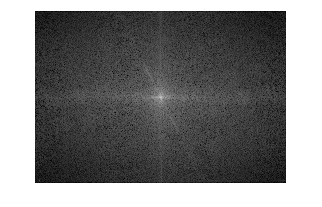
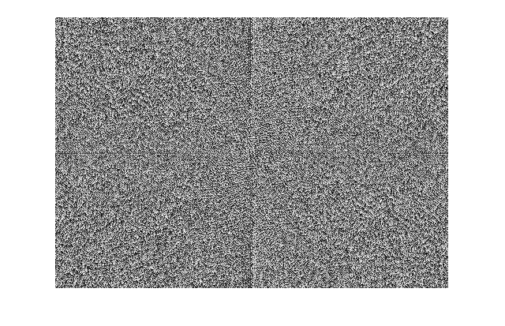
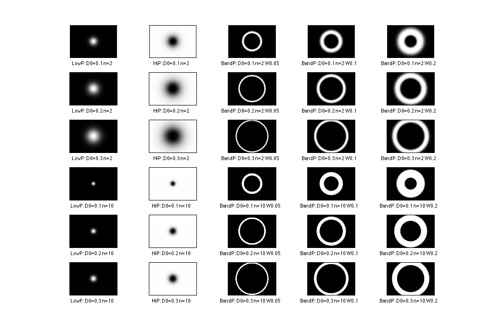
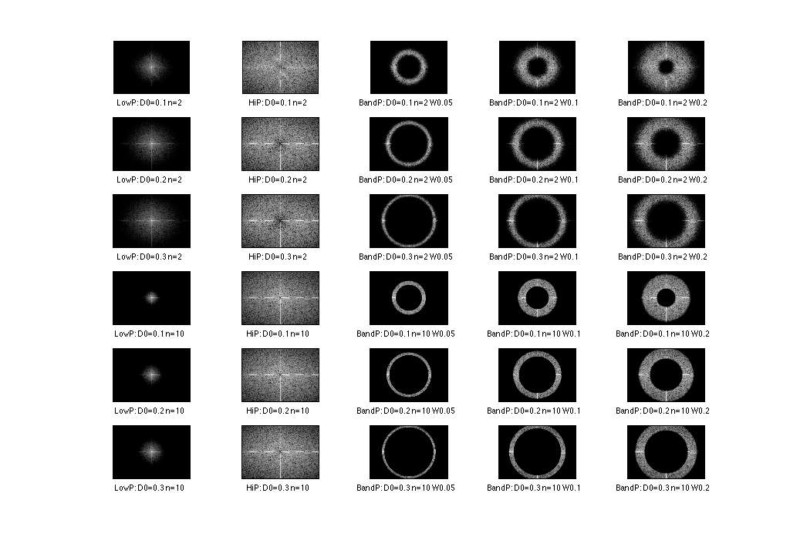
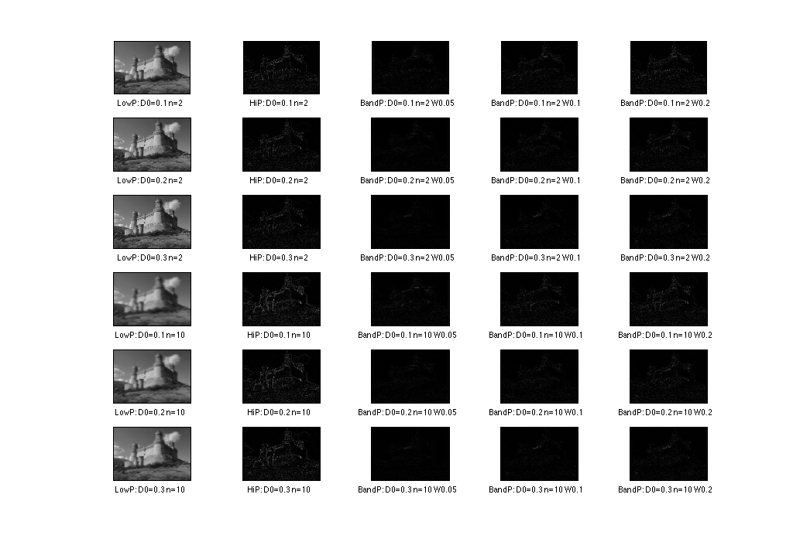
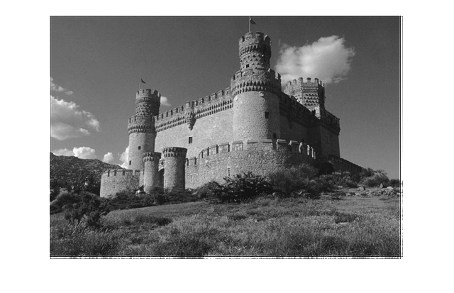
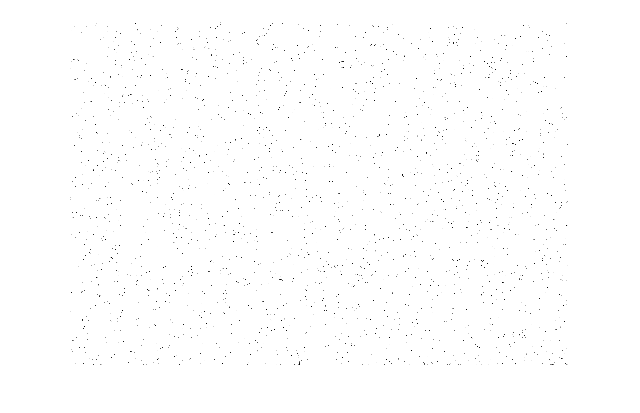
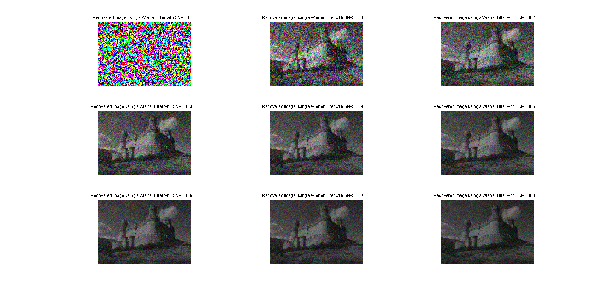
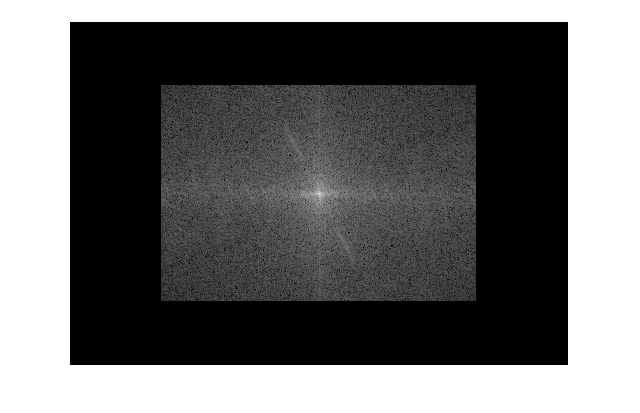
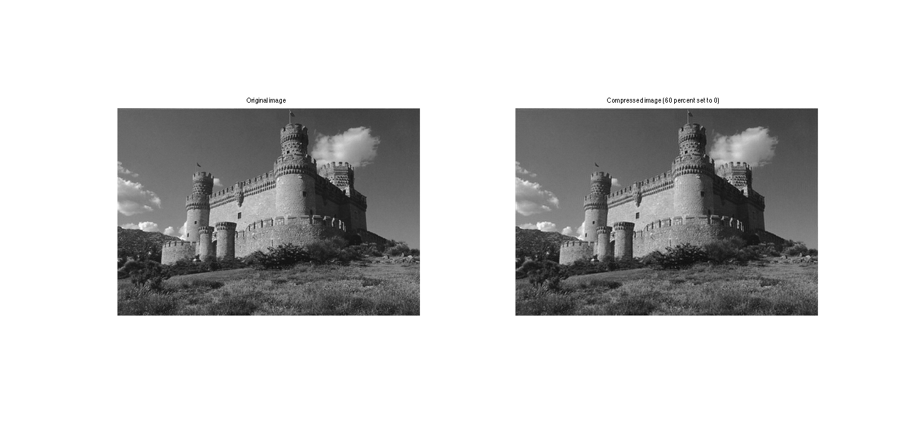

Contents
close all
clear all
clc
img = imread('imgs/castle_grey.jpg');
img = im2double(img);
eps = 1E-12;
logPowerSpec = @(Mat)log(1 + Mat.*conj(Mat));
shiftMat2Min = @(Mat) Mat - min(Mat(:));
scaleMatByMax = @(Mat) Mat ./ max(Mat(:));
normalizeMat = @(Mat) scaleMatByMax(shiftMat2Min(Mat));
transformBack = @(Mat) ifft2(ifftshift(Mat));
clipImg = @(Mat) abs(Mat(1:size(img,1), 1:size(img, 2)));
clipTransformBack = @(Mat) clipImg(transformBack(Mat));
task 1
figure('Position', [100, 100, 1024, 800], 'name','Plots of cos(2pi*k*x/N) Plots');
N = 16;
idx = 1;
for k=1:16
h = subplot(4,4,idx);
fplot(@(x) cos((2*pi()*k/N)*x), [0, 16])
hold on
stem(cos((2*pi()*k/N)*(1:16)),'fill','-.');
hold off
title(strcat('k=',num2str(idx)))
idx = idx + 1;
end
disp(['N = ', num2str(N), ' thus N+1 = ', num2str(N+1), ' samples are used.']);
disp(['Hence, the sample rate f_s is equal to ', num2str(N), ' samples per time unit.']);
disp(['Since the Nyquist frequency f_n is equal to 0.5*f_s']);
disp(['It follows f_n = ',num2str(N/2),' for N equal to ',num2str(N)]);
disp(['Since k denotes a frequency we can set k = f_n = ', num2str(N/2), '(i.e. hit k hits Nyquist frequency)']);
disp(['Then omega = 2*pi*k/N = 2*pi*(N/2)/N = pi']);
disp(char(10));
N = 16 thus N+1 = 17 samples are used.
Hence, the sample rate f_s is equal to 16 samples per time unit.
Since the Nyquist frequency f_n is equal to 0.5*f_s
It follows f_n = 8 for N equal to 16
Since k denotes a frequency we can set k = f_n = 8(i.e. hit k hits Nyquist frequency)
Then omega = 2*pi*k/N = 2*pi*(N/2)/N = pi

task 2
M = 10;
W_loop = zeros(M,M);
for m=0:M-1,
for n=0:M-1,
W_loop(m+1,n+1) = exp((-1i*2*pi()*m*n)/M);
end
end
IDX = repmat((0:M-1),M, 1);
Cmn = IDX.*IDX';
phi = 2*pi()*Cmn/M;
W = cos(phi)-1i*sin(phi);
deltaW = (W - W_loop);
if(abs(sum(deltaW(:))) < 1E-12)
disp('W is okay')
else
disp('Error: W does not correspond to its loop version!')
end
disp(char(10))
disp('Let U := W/sqrt(M)')
U = (W / sqrt(M));
cond1 = (abs(det(U))-1)^2 < eps;
cond2 = (sum(sum(U*U'-eye(M))))^2 < eps;
cond3 = (sum(sum(U'*U-eye(M))))^2 < eps;
if( cond1 + cond2 + cond3 == 3 )
disp('|det(U)| = 1 and U*U = UU* = I holds true');
else
disp('Error: At least one condition, |det(U)| = 1 and U*U = UU* = I, does not true');
end
disp(char(10))
figure('Position', [100, 100, 1024, 800], 'name', 'real and imag DFT coefficent W plots');
for m=0:M-1
subplot(M,2,2*(m+1)-1);
plot(0:M-1, real(W(m+1,:)), 'r', 0:M-1, imag(W(m+1,:)), 'b');
if(m==0)
title('Rows in DFT matrix, real (red) and imaginary (blue) (i-th figure are coeff of Fi)');
end
end
for k=0:M-1
subplot(M,2,2*(k+1));
fplot(@(x)sin(k*x), [0,M-1], 'r');
hold on;
fplot(@(x)cos(k*x), [0,M-1], 'b');
if(k==0)
title('sin (red) and cos (blue) for varying frequency values k (i-th figure is k=i)');
end
end
disp('My Observations:');
disp('Elements in W are equal to e^(-i*2*pi*k/M) = cos(-2*pi*k/M) + i*sin(-2*pi*k/M) (Euler Fromula)');
disp('real(e^(-i*2*pi*k/M)) = cos(2*pi*k) (cos is even function');
disp('imag(e^(-i*2*pi*k/M)) = -sin(2*pi*k/M) (sin is odd function');
disp('Until Index M/2 + 1 (assuming M is even) the follwoing holds true:');
disp('See first M/2 + 1 rows in first column in subfigure plots');
disp('Therefore plotting real(e^(-i*2*pi*k/M) gives us a cosine wave with period k');
disp('and plotting imag(e^(-i*2*pi*k/M) gives us a sine wave with period k');
disp('Index m=M/2 has imag = 0');
disp('The periods descrease symmetrically like they increased from this index on.');
disp('In addition, since the real part is a cos wave which is an even function');
disp('the plot of the k-th index is the same as (M/2 - k + 1)-th index (assuming M is even)');
disp('Similarly, the can reason for sine, but it is flipped since sine is an even function');
disp('i.e. sine at k-th plot corresponds to same plot times -1 of (M/2 - k + 1)-th');
disp('To make this observation clear');
disp('Set M=10 in this task and we assume that the first figure is labeled by index 1');
disp('Comparing 3rd figure in column 1 with the 9th figure in column 1, we see that ');
disp('their red curves are the same and that the blue curve of the 3rd one is -1 times the 9th one');
disp('furthermore both have a period equal to 2');
disp(char(10))
x = (2*pi()*(0:M-1));
for k=0:M-1,
disp(['For k=',num2str(k), ':']);
Fk = W*cos(x)';
matlabFk = fft(cos(k * x))';
dftsAreTheSame = sum(Fk-matlabFk)^2 < eps;
if(dftsAreTheSame == 1)
disp('W*f_k is the same as Matlab`s FFT{f_k}')
else
display('Eror: W*f_k NOT SAME as Matlab`s FFT{f_k}')
end
shiftedFk = fftshift(Fk);
shiftedMatlabFk = fftshift(matlabFk);
shiftedDftsAreTheSame = (sum(shiftedFk-shiftedMatlabFk)^2 < eps);
if(shiftedDftsAreTheSame == 1)
disp('shifted W*f_k is the same as Matlab`s shifted FFT{f_k}')
else
display('Eror: shifted W*f_k NOT SAME as shifted Matlab`s FFT{f_k}')
end
disp(char(10));
end
disp('My Intuition:');
disp('from Matlab`s help page about the fftshift function:');
disp('1. shifts the zero-frequency component to center of spectrum');
disp('I.e. For a vector v, fftshift(v) swaps the left and right halves of v');
disp(char(10));
disp('Fact: The dft of a function is a Periodic Function');
disp('In our case we the dft of the function is a vector v with M elements.');
disp('Appending the 2nd half of this vector to the first half');
disp('which correspond to swapping the left and right halves of v');
disp('this gives us a center symmetric vector looking like this');
disp('[4,3,2,1,2,3] where `1` is the centered zero frequency.');
disp('Before shifting: [1,2,3,4,3,2] we had this periodic function (aft dft)');
disp(char(10));
disp('For 1D Fourier tranformation when given M elements');
disp('The DFT has an asymptotic complexity of O(M^2)');
disp('The FTT has an asymptotic complexity of O(M*log(M)');
disp('Speedup factor using the FFT algorithm instead computing DFT Matrix:');
disp('O([M^2] / [M*log(M)]) which is in O(M/log(M))');
disp('E.g. given an nxn image (monochromatic) => i.e. M = n^2 (serialized image');
disp('using the DFT algorithm has a asym. complexity in O([n^4]');
disp('using the FFT algorithm has a asym. complexity in O([n^2 log(n^2)]');
disp('which is equal to O([2*(n^2) log(n)] = O([(n^2)*log(n)]');
disp('Assuming for the derivation of the FFT algorithm was a regular Divide&Conquer approach applied')
disp('we referre to the logarithm to the basis of 2, when talking about log')
disp('Therefore, if n=400, then');
disp('using the DFT algorithm: about 2.5600e+10 Iterations');
disp('using the FFT algorithm: about 1.3830e+06 Iterations');
disp('This is for this case a speedup about 4 orders of magnitude (1.8510e+04)');
disp(char(10));
W is okay
Let U := W/sqrt(M)
|det(U)| = 1 and U*U = UU* = I holds true
My Observations:
Elements in W are equal to e^(-i*2*pi*k/M) = cos(-2*pi*k/M) + i*sin(-2*pi*k/M) (Euler Fromula)
real(e^(-i*2*pi*k/M)) = cos(2*pi*k) (cos is even function
imag(e^(-i*2*pi*k/M)) = -sin(2*pi*k/M) (sin is odd function
Until Index M/2 + 1 (assuming M is even) the follwoing holds true:
See first M/2 + 1 rows in first column in subfigure plots
Therefore plotting real(e^(-i*2*pi*k/M) gives us a cosine wave with period k
and plotting imag(e^(-i*2*pi*k/M) gives us a sine wave with period k
Index m=M/2 has imag = 0
The periods descrease symmetrically like they increased from this index on.
In addition, since the real part is a cos wave which is an even function
the plot of the k-th index is the same as (M/2 - k + 1)-th index (assuming M is even)
Similarly, the can reason for sine, but it is flipped since sine is an even function
i.e. sine at k-th plot corresponds to same plot times -1 of (M/2 - k + 1)-th
To make this observation clear
Set M=10 in this task and we assume that the first figure is labeled by index 1
Comparing 3rd figure in column 1 with the 9th figure in column 1, we see that
their red curves are the same and that the blue curve of the 3rd one is -1 times the 9th one
furthermore both have a period equal to 2
For k=0:
W*f_k is the same as Matlab`s FFT{f_k}
shifted W*f_k is the same as Matlab`s shifted FFT{f_k}
For k=1:
W*f_k is the same as Matlab`s FFT{f_k}
shifted W*f_k is the same as Matlab`s shifted FFT{f_k}
For k=2:
W*f_k is the same as Matlab`s FFT{f_k}
shifted W*f_k is the same as Matlab`s shifted FFT{f_k}
For k=3:
W*f_k is the same as Matlab`s FFT{f_k}
shifted W*f_k is the same as Matlab`s shifted FFT{f_k}
For k=4:
W*f_k is the same as Matlab`s FFT{f_k}
shifted W*f_k is the same as Matlab`s shifted FFT{f_k}
For k=5:
W*f_k is the same as Matlab`s FFT{f_k}
shifted W*f_k is the same as Matlab`s shifted FFT{f_k}
For k=6:
W*f_k is the same as Matlab`s FFT{f_k}
shifted W*f_k is the same as Matlab`s shifted FFT{f_k}
For k=7:
W*f_k is the same as Matlab`s FFT{f_k}
shifted W*f_k is the same as Matlab`s shifted FFT{f_k}
For k=8:
W*f_k is the same as Matlab`s FFT{f_k}
shifted W*f_k is the same as Matlab`s shifted FFT{f_k}
For k=9:
W*f_k is the same as Matlab`s FFT{f_k}
shifted W*f_k is the same as Matlab`s shifted FFT{f_k}
My Intuition:
from Matlab`s help page about the fftshift function:
1. shifts the zero-frequency component to center of spectrum
I.e. For a vector v, fftshift(v) swaps the left and right halves of v
Fact: The dft of a function is a Periodic Function
In our case we the dft of the function is a vector v with M elements.
Appending the 2nd half of this vector to the first half
which correspond to swapping the left and right halves of v
this gives us a center symmetric vector looking like this
[4,3,2,1,2,3] where `1` is the centered zero frequency.
Before shifting: [1,2,3,4,3,2] we had this periodic function (aft dft)
For 1D Fourier tranformation when given M elements
The DFT has an asymptotic complexity of O(M^2)
The FTT has an asymptotic complexity of O(M*log(M)
Speedup factor using the FFT algorithm instead computing DFT Matrix:
O([M^2] / [M*log(M)]) which is in O(M/log(M))
E.g. given an nxn image (monochromatic) => i.e. M = n^2 (serialized image
using the DFT algorithm has a asym. complexity in O([n^4]
using the FFT algorithm has a asym. complexity in O([n^2 log(n^2)]
which is equal to O([2*(n^2) log(n)] = O([(n^2)*log(n)]
Assuming for the derivation of the FFT algorithm was a regular Divide&Conquer approach applied
we referre to the logarithm to the basis of 2, when talking about log
Therefore, if n=400, then
using the DFT algorithm: about 2.5600e+10 Iterations
using the FFT algorithm: about 1.3830e+06 Iterations
This is for this case a speedup about 4 orders of magnitude (1.8510e+04)

task 3
img = imread('imgs/castle_grey.jpg');
img = im2double(img);
imgDft2 = fft2(img);
oneChannel = img(:,:,1);
centerFreqSameAsPixelsum = (imgDft2(1,1)-sum(oneChannel(:)))^2 < eps;
if(centerFreqSameAsPixelsum == 1)
disp('Element (1,1) of the Fourier transform corresponds to the sum over all pixel values.');
else
disp('Error: Pixel value sum not central frequency (1,1)')
end
disp(char(10));
M = size(img,1)*size(img,2);
persevalsTheoremHoldsTrue = sum(sum(sum(img.^2))...
-(1/M)*sum(sum(imgDft2.*conj(imgDft2)))).^2 < eps;
if(sum(persevalsTheoremHoldsTrue) == 1)
disp('Perseval`s Theorem holds true');
else
disp('Error: Perseval`s Theorem does NOT hold true')
end
disp(char(10));
centeredDFT = fftshift(imgDft2);
S = centeredDFT .* conj(centeredDFT);
spectrum = log(1+S);
spectrum = (spectrum - min(spectrum(:)));
spectrum = spectrum ./ max(spectrum(:));
figure('name', 'Centered and Scaled Power Spectrum of Image');
imshow(spectrum);
dftPhase = angle(centeredDFT);
dftPhase = dftPhase - min(dftPhase(:));
dftPhase = dftPhase ./ max(dftPhase(:));
figure('name', 'Centered and Scaled phase angles of Image');
imshow(dftPhase);
Element (1,1) of the Fourier transform corresponds to the sum over all pixel values.
Perseval`s Theorem holds true
 
task 4
dims = size(img);
imgDft2 = fft2(img, 2*dims(1), 2*dims(2));
[height, width, ~] = size(imgDft2);
h = (height - 1)/2;
w = (width - 1)/2;
[x,y] = meshgrid(-w:w,-h:h);
D = x.^2 + y.^2;
D = D-min(D(:));
D = D ./ max(D(:));
H_lowpass = @(D0,n) 1./((1+(D/D0)).^(2*n));
H_highpass = @(D0,n) 1 - H_lowpass(D0,n);
H_bandass = @(W,D0,n) 1-(1 ./ (1 + ((W.*D)./(D.^2 - D0^2)).^(2*n)));
ns = [2, 10];
D0s = [0.1, 0.2, 0.3];
Ws = [0.05, 0.1, 0.2];
figure('Position', [100, 100, 1024, 800], 'name','Visualize log Power Spectrum of filters');
figIdx = 1;
for nIdx=1:length(ns),
for D0Idx=1:length(D0s),
D0 = D0s(D0Idx);
n = ns(nIdx);
fig_title = strcat('LowP: D0='...
,num2str(D0), ' n=', num2str(n));
normLow = normalizeMat(logPowerSpec(H_lowpass(D0, n)));
g = subplot(length(ns)*length(D0s),2+length(Ws),figIdx);
subimage(normLow);
xlabelHandler = get(g,'XLabel');
set( xlabelHandler, 'String', fig_title);
set(gca,'xtick',[],'ytick',[]);
figIdx = figIdx + 1;
fig_title = strcat('HiP: D0='...
,num2str(D0), ' n=', num2str(n));
normHigh = normalizeMat(logPowerSpec(H_highpass(D0, n)));
g = subplot(length(ns)*length(D0s),2+length(Ws),figIdx);
subimage(normHigh);
xlabelHandler = get(g,'XLabel');
set( xlabelHandler, 'String', fig_title);
set(gca,'xtick',[],'ytick',[]);
figIdx = figIdx + 1;
for WIdx=1:length(Ws),
W = Ws(WIdx);
fig_title = strcat('BandP: D0='...
,num2str(D0), ' n=', num2str(n), ' W',num2str(W));
normBand = normalizeMat(logPowerSpec(H_bandass(W,D0,n)));
g = subplot(length(ns)*length(D0s),2+length(Ws),figIdx);
subimage(normBand);
xlabelHandler = get(g,'XLabel');
set( xlabelHandler, 'String', fig_title);
set(gca,'xtick',[],'ytick',[]);
figIdx = figIdx + 1;
end
end
end
disp('Note that in the previous figure all a row corresponds to a certain D0');
disp('The 1st column is the lowpass filter spectrums');
disp('The 2nd column is the highpass filter spectrum');
disp('And the columns 3-5 are the bandpass filter spectrums for varying W');
disp(char(10));
disp(char(10));
disp('My observations:')
disp('The filters in the previous figure are normalized - range from [0,1]')
disp('Therefore, the brighter the higher the weighting value and vice versa')
disp('White corresponds to the weight 1, black to the weight 0');
disp('Low Pass filter: weighting frequencies closer the center more than those further away');
disp('Select the lower frequencies:')
disp('Filters hight frequencies out (the detail). Thus we get Blurs image');
disp(char(10));
disp('High Pass filter: weights frequencies further away from the center more than those closer to the center');
disp('Filters low frequencies out.')
disp('The closer this filter gets towards zero, the closer its filtered result is to the original input image');
disp(char(10));
disp('the bandpass filter is a disk selecting a certain band spectrum')
disp(char(10));
disp('D0 affects the size of the radius:');
disp('The bigger D0 the bigger the radius gets and vice versa.');
disp('W affects the width of the filter band:');
disp('Increasing W increases the filter band width.');
disp('Loosly speaking it affects the inner radius of the disk');
disp('the bigger W gets, the smaller the inner radius gets');
disp('N Determins the smoothness of the circle border:');
disp('The higher n gets the sharper the transition');
disp('I.e. low value of n => smooth');
disp('I.e. very high value of n => sharp');
imgDft2 = imgDft2(:,:,1);
imgDft2 = fftshift(imgDft2);
figure('Position', [100, 100, 1024, 800], 'name','Spectrum of filtered DFT Img');
figIdx = 1;
for nIdx=1:length(ns),
for D0Idx=1:length(D0s),
D0 = D0s(D0Idx);
n = ns(nIdx);
fig_title = strcat('LowP: D0='...
,num2str(D0), ' n=', num2str(n));
normLow = normalizeMat(logPowerSpec(imgDft2 .* H_lowpass(D0, n)));
g = subplot(length(ns)*length(D0s),2+length(Ws),figIdx);
subimage(normLow);
xlabelHandler = get(g,'XLabel');
set( xlabelHandler, 'String', fig_title);
set(gca,'xtick',[],'ytick',[]);
figIdx = figIdx + 1;
fig_title = strcat('HiP: D0='...
,num2str(D0), ' n=', num2str(n));
normHigh = normalizeMat(logPowerSpec(imgDft2.*H_highpass(D0, n)));
g = subplot(length(ns)*length(D0s),2+length(Ws),figIdx);
subimage(normHigh);
xlabelHandler = get(g,'XLabel');
set( xlabelHandler, 'String', fig_title);
set(gca,'xtick',[],'ytick',[]);
figIdx = figIdx + 1;
for WIdx=1:length(Ws),
W = Ws(WIdx);
fig_title = strcat('BandP: D0='...
,num2str(D0), ' n=', num2str(n), ' W',num2str(W));
normBand = normalizeMat(logPowerSpec(imgDft2.*H_bandass(W,D0,n)));
g = subplot(length(ns)*length(D0s),2+length(Ws),figIdx);
subimage(normBand);
xlabelHandler = get(g,'XLabel');
set( xlabelHandler, 'String', fig_title);
set(gca,'xtick',[],'ytick',[]);
figIdx = figIdx + 1;
end
end
end
figure('Position', [100, 100, 1024, 800], 'name','Filter Imges');
figIdx = 1;
for nIdx=1:length(ns),
for D0Idx=1:length(D0s),
D0 = D0s(D0Idx);
n = ns(nIdx);
fig_title = strcat('LowP: D0='...
,num2str(D0), ' n=', num2str(n));
normLow = imgDft2 .* H_lowpass(D0, n);
g = subplot(length(ns)*length(D0s),2+length(Ws),figIdx);
subimage(clipTransformBack(normLow));
xlabelHandler = get(g,'XLabel');
set( xlabelHandler, 'String', fig_title);
set(gca,'xtick',[],'ytick',[]);
figIdx = figIdx + 1;
fig_title = strcat('HiP: D0='...
,num2str(D0), ' n=', num2str(n));
normHigh = imgDft2.*H_highpass(D0, n);
g = subplot(length(ns)*length(D0s),2+length(Ws),figIdx);
subimage(clipTransformBack(normHigh));
xlabelHandler = get(g,'XLabel');
set( xlabelHandler, 'String', fig_title);
set(gca,'xtick',[],'ytick',[]);
figIdx = figIdx + 1;
for WIdx=1:length(Ws),
W = Ws(WIdx);
fig_title = strcat('BandP: D0='...
,num2str(D0), ' n=', num2str(n), ' W',num2str(W));
normBand = imgDft2.*H_bandass(W,D0,n);
g = subplot(length(ns)*length(D0s),2+length(Ws),figIdx);
subimage(clipTransformBack(normBand));
xlabelHandler = get(g,'XLabel');
set( xlabelHandler, 'String', fig_title);
set(gca,'xtick',[],'ytick',[]);
figIdx = figIdx + 1;
end
end
end
Note that in the previous figure all a row corresponds to a certain D0
The 1st column is the lowpass filter spectrums
The 2nd column is the highpass filter spectrum
And the columns 3-5 are the bandpass filter spectrums for varying W
My observations:
The filters in the previous figure are normalized - range from [0,1]
Therefore, the brighter the higher the weighting value and vice versa
White corresponds to the weight 1, black to the weight 0
Low Pass filter: weighting frequencies closer the center more than those further away
Select the lower frequencies:
Filters hight frequencies out (the detail). Thus we get Blurs image
High Pass filter: weights frequencies further away from the center more than those closer to the center
Filters low frequencies out.
The closer this filter gets towards zero, the closer its filtered result is to the original input image
the bandpass filter is a disk selecting a certain band spectrum
D0 affects the size of the radius:
The bigger D0 the bigger the radius gets and vice versa.
W affects the width of the filter band:
Increasing W increases the filter band width.
Loosly speaking it affects the inner radius of the disk
the bigger W gets, the smaller the inner radius gets
N Determins the smoothness of the circle border:
The higher n gets the sharper the transition
I.e. low value of n => smooth
I.e. very high value of n => sharp
  
task 5
gaussianFilter = fspecial('gaussian',5,1);
blurredImg = imfilter(img, gaussianFilter);
noisyBluredImg = imnoise(blurredImg, 'gaussian', 0, 0.05);
dftBluredImg = fftshift(fft2(blurredImg, 2*dims(1), 2*dims(2)));
dftBluredImg = dftBluredImg(:,:,1);
dftNoisyBluredImg = fftshift(fft2(noisyBluredImg, 2*dims(1), 2*dims(2)));
dftNoisyBluredImg = dftNoisyBluredImg(:,:,1);
dftGaussian = fftshift(fft2(gaussianFilter, 2*dims(1), 2*dims(2)));
invFilteredBlurred = dftBluredImg ./ dftGaussian;
invFilteredNoisyBlured = dftNoisyBluredImg ./ dftGaussian;
figure('name', 'Recovered blury image by Inverse Filtering')
imshow(clipTransformBack(invFilteredBlurred))
figure('name', 'Recovered Noisy image by Inverse Filtering')
imshow(clipTransformBack(invFilteredNoisyBlured))
figure('name', 'Recovered Noisy image by Inverse Filtering scaled linearly to [0,1] range')
imshow(normalizeMat(clipTransformBack(invFilteredNoisyBlured)))
disp('Let I be a given image');
disp('H denotes a filter (here a gaussian filter)');
disp('and N denote noise');
disp('Assuming the Degradation Model')
disp('Then G = H*I + N is the noisy image')
disp('Applying inverse filtering to G using H gives us then:')
disp('invI = G/H = I + N/H');
disp('If the elements in H are relatively small')
disp('the ratio N/H will be relatively large')
disp('Thus, assuming - which is the case in our example -')
disp('that the values the elements in H (our gaussian Filter) are very small')
disp('The noisy will then dominate in the recovered image invI')
disp('This can be observed in the figures shown previousely.')
disp('Note that scale the image linearly into the range [0,1] does not help')
disp('This can also be oberved in one of the previous figures.')
disp('In contrary, images without exhibiting any significant noise')
disp('can be rather well recovered relying on the inverse method')
disp(char(10))
figure('Position', [100, 100, 1440, 800], 'name', 'Recovered Noisy Image a using Wiener Filter');
SNR = 0:0.1:0.8;
for idx = 1:length(SNR),
recoveredImg = deconvwnr(noisyBluredImg, gaussianFilter, SNR(idx));
subplot(3,3,idx);
imshow(recoveredImg);
title(['Recovered image using a Wiener Filter with SNR = ', num2str(SNR(idx))]);
end
disp('The following reasoning does hold true for Wiener filters:');
disp('SNR denotes signal to noise ratio, i.e. Sf(u;v) / Sn(u;v)');
disp('IF the SNR is equal to zero then either');
disp('a) Sf(u;v) is zero for all u,v i.e. there is no signal OR');
disp('b) Sn(u;v) is extremly large for all u,v (almost infinity noise)');
disp('Since case a) clearly cannot be true (since we do have a signal)');
disp('i.e. an image != black');
disp('Case be must be true');
disp('Thus, case b) corresponds to the case when we have almost infinite noise (contribution)');
disp('This can be observed in the first subfigure in the previous figure.');
disp('Having almost inf. Noise will make the Wiener Filter formular almost equal zero');
disp('and then only noise will then dominate.');
disp(char(10))
Let I be a given image
H denotes a filter (here a gaussian filter)
and N denote noise
Assuming the Degradation Model
Then G = H*I + N is the noisy image
Applying inverse filtering to G using H gives us then:
invI = G/H = I + N/H
If the elements in H are relatively small
the ratio N/H will be relatively large
Thus, assuming - which is the case in our example -
that the values the elements in H (our gaussian Filter) are very small
The noisy will then dominate in the recovered image invI
This can be observed in the figures shown previousely.
Note that scale the image linearly into the range [0,1] does not help
This can also be oberved in one of the previous figures.
In contrary, images without exhibiting any significant noise
can be rather well recovered relying on the inverse method
The following reasoning does hold true for Wiener filters:
SNR denotes signal to noise ratio, i.e. Sf(u;v) / Sn(u;v)
IF the SNR is equal to zero then either
a) Sf(u;v) is zero for all u,v i.e. there is no signal OR
b) Sn(u;v) is extremly large for all u,v (almost infinity noise)
Since case a) clearly cannot be true (since we do have a signal)
i.e. an image != black
Case be must be true
Thus, case b) corresponds to the case when we have almost infinite noise (contribution)
This can be observed in the first subfigure in the previous figure.
Having almost inf. Noise will make the Wiener Filter formular almost equal zero
and then only noise will then dominate.
 


task 6
disp('Parseval`s Theorem states that squared sum of the coefficients of the spatial')
disp('signal are equal to the squared sum of the signal in the frequency')
disp('domain up to a factor N.');
disp('I.e. the Energy of the spatial signal corresponds to ')
disp('the energy of the signal in the frequency scaled by a certain factor');
disp('the factor M is the number of samples taken')
disp('Since a image has n x n samples (assuming image has a quadratic resolution)')
disp('A user specified value to the square root of 2 is proportinal the length and widht')
disp('i.e. (imgLength - sqrt(1-percentage)*imgLength)) /2 ')
disp('This length determines the the window of zero elements in the DFT of the image')
disp('A good strategy will be the following: Set high freqencies equal to zero')
disp('related to the computed length above.');
disp('Setting high-frequencies should work rather well since the human eye is more sensitive to low frequencies');
disp('and is not able to distinguish exactly between strength levels of a high frequency brightness variation');
disp(char(10))
p = 0.6;
q = 1-p;
heightR = round((dims(1) - sqrt(q)*dims(1))/2);
widthR = round((dims(2) - sqrt(q)*dims(2))/2);
dftImg = fft2(img);
save('imgs/uncompressed.mat', 'dftImg');
fileInfo = dir('imgs/uncompressed.mat');
uncompressedMB = fileInfo.bytes/1024^2;
disp(['Size Uncompressed File: ',num2str(uncompressedMB), ' MB']);
disp(char(10))
dftImg = fftshift(dftImg);
figure('Position', [100, 100, 1440, 800], 'name', 'Uncompressed Spectrum');
imshow(normalizeMat(logPowerSpec(dftImg)))
dftImg(1:heightR, :, :) = 0;
dftImg(dims(1)-heightR:dims(1), :, :) = 0;
dftImg(:, 1:widthR, :) = 0;
dftImg(:, dims(2)-widthR:dims(2), :) = 0;
figure('Position', [100, 100, 1440, 800], 'name', 'Compessed Spectrum');
imshow(normalizeMat(logPowerSpec(dftImg)))
dftImg = ifftshift(dftImg);
save('imgs/compressed.mat', 'dftImg');
fileInfo = dir('imgs/compressed.mat');
compressedMB = fileInfo.bytes/1024^2;
disp(['Size Compressed File: ',num2str(compressedMB), ' MB']);
disp(char(10))
load('imgs/compressed.mat', 'dftImg');
recoveredCompressedImg = abs(ifft2(dftImg));
figure('Position', [100, 100, 1440, 800], 'name', 'Original (left) and Compressed (right) Image')
subplot(1,2,1);
imshow(img);
title('Original image');
subplot(1,2,2);
imshow(recoveredCompressedImg);
title(['Compressed image (', num2str(100*p), ' percent set to 0)'])
firstImgColChang = img(:,:,1);
deltaImg = (img-recoveredCompressedImg);
firstColChan = deltaImg(:,:,1);
errorL2 = (sum(firstColChan(:))^2);
errorRelL2 = errorL2 / (norm(firstImgColChang(:)));
disp('Status of Compressed Image')
disp([num2str(100*p), ' percente of the image values got replaced by 0']);
disp(['Compressed by a factor of ', num2str((compressedMB/uncompressedMB))]);
disp(['L2 error: ', num2str(errorL2)]);
disp(['Relative L2 error: ', num2str(errorRelL2)]);
disp(char(10))
disp('Given Compression Percentage is approx. equal to 100% - CompressionFactor*100%')
disp('According to Parseval?s Theorem the spatial Energy of a signal is equal to ')
disp('the Energy of the signal in the frequency domain')
disp('times a factor (1/M) where M is the number of samples')
disp('Since use q = 1-p, where p is the user specified % compression factor')
disp('and set all high freq. values in a mask of diameter srt(q*dim) to zero')
disp('and our image is 2d, this corresponds to affecting this scale factor 1/M.')
disp('since we reduce each dim sqrt(q)length and we have two dimensions')
disp('and reducing corresponds setting the boundary with a certain width equal zero');
disp('we get in the compression the ratio of length*sqrt(q)^2');
disp('This is exactly equal to the compression factor mentioned above');
disp(char(10))
experimentPRange = 0.40:0.05:0.80;
CompExpData = zeros(length(experimentPRange), 4);
idx = 1;
for p=experimentPRange,
q = 1-p;
heightR = round((dims(1) - sqrt(q)*dims(1))/2);
widthR = round((dims(2) - sqrt(q)*dims(2))/2);
dftImg = fftshift(fft2(img));
dftImg(1:heightR, :, :) = 0;
dftImg(dims(1)-heightR:dims(1), :, :) = 0;
dftImg(:, 1:widthR, :) = 0;
dftImg(:, dims(2)-widthR:dims(2), :) = 0;
dftImg = ifftshift(dftImg);
filePathName = strcat('imgs/compressed_p_',num2str(p),'.mat');
save(filePathName, 'dftImg');
load(filePathName, 'dftImg');
fileInfo = dir(filePathName);
compressedMB = fileInfo.bytes/1024^2;
recoveredCompressedImg = abs(ifft2(dftImg));
deltaImg = (img-recoveredCompressedImg);
firstColChan = deltaImg(:,:,1);
errorL2 = (sum(firstColChan(:))^2);
errorRelL2 = errorL2 / (norm(firstImgColChang(:)));
disp([num2str(100*p), ' percente of the image values got replaced by 0']);
disp(['Compressed by a factor of ', num2str((compressedMB/uncompressedMB))]);
disp(['L2 error: ', num2str(errorL2)]);
disp(['Relative L2 error: ', num2str(errorRelL2)]);
disp(char(10))
CompExpData(idx, :) = [p*100, errorL2, errorRelL2, compressedMB/uncompressedMB];
idx = idx + 1;
end
disp('Evaluation Compression experiment')
disp('Column Format: Percentag, L2 error, rel. L2 error, compression ratio')
disp(CompExpData);
disp(char(10))
Parseval`s Theorem states that squared sum of the coefficients of the spatial
signal are equal to the squared sum of the signal in the frequency
domain up to a factor N.
I.e. the Energy of the spatial signal corresponds to
the energy of the signal in the frequency scaled by a certain factor
the factor M is the number of samples taken
Since a image has n x n samples (assuming image has a quadratic resolution)
A user specified value to the square root of 2 is proportinal the length and widht
i.e. (imgLength - sqrt(1-percentage)*imgLength)) /2
This length determines the the window of zero elements in the DFT of the image
A good strategy will be the following: Set high freqencies equal to zero
related to the computed length above.
Setting high-frequencies should work rather well since the human eye is more sensitive to low frequencies
and is not able to distinguish exactly between strength levels of a high frequency brightness variation
Size Uncompressed File: 7.6072 MB
Size Compressed File: 3.058 MB
Status of Compressed Image
60 percente of the image values got replaced by 0
Compressed by a factor of 0.40198
L2 error: 4.6981
Relative L2 error: 0.027662
Given Compression Percentage is approx. equal to 100% - CompressionFactor*100%
According to Parseval?s Theorem the spatial Energy of a signal is equal to
the Energy of the signal in the frequency domain
times a factor (1/M) where M is the number of samples
Since use q = 1-p, where p is the user specified % compression factor
and set all high freq. values in a mask of diameter srt(q*dim) to zero
and our image is 2d, this corresponds to affecting this scale factor 1/M.
since we reduce each dim sqrt(q)length and we have two dimensions
and reducing corresponds setting the boundary with a certain width equal zero
we get in the compression the ratio of length*sqrt(q)^2
This is exactly equal to the compression factor mentioned above
40 percente of the image values got replaced by 0
Compressed by a factor of 0.60001
L2 error: 1.5343
Relative L2 error: 0.0090338
45 percente of the image values got replaced by 0
Compressed by a factor of 0.55135
L2 error: 1.9099
Relative L2 error: 0.011245
50 percente of the image values got replaced by 0
Compressed by a factor of 0.50313
L2 error: 2.7686
Relative L2 error: 0.016302
55 percente of the image values got replaced by 0
Compressed by a factor of 0.45057
L2 error: 4.0209
Relative L2 error: 0.023675
60 percente of the image values got replaced by 0
Compressed by a factor of 0.40198
L2 error: 4.6981
Relative L2 error: 0.027662
65 percente of the image values got replaced by 0
Compressed by a factor of 0.35298
L2 error: 6.0201
Relative L2 error: 0.035447
70 percente of the image values got replaced by 0
Compressed by a factor of 0.30187
L2 error: 7.3277
Relative L2 error: 0.043146
75 percente of the image values got replaced by 0
Compressed by a factor of 0.25274
L2 error: 11.8191
Relative L2 error: 0.069591
80 percente of the image values got replaced by 0
Compressed by a factor of 0.20369
L2 error: 13.7996
Relative L2 error: 0.081253
Evaluation Compression experiment
Column Format: Percentag, L2 error, rel. L2 error, compression ratio
40.0000 1.5343 0.0090 0.6000
45.0000 1.9099 0.0112 0.5513
50.0000 2.7686 0.0163 0.5031
55.0000 4.0209 0.0237 0.4506
60.0000 4.6981 0.0277 0.4020
65.0000 6.0201 0.0354 0.3530
70.0000 7.3277 0.0431 0.3019
75.0000 11.8191 0.0696 0.2527
80.0000 13.7996 0.0813 0.2037
 